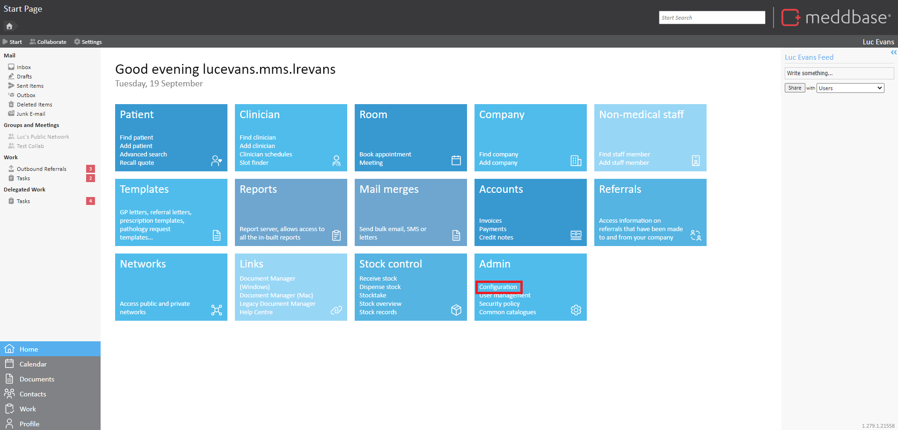
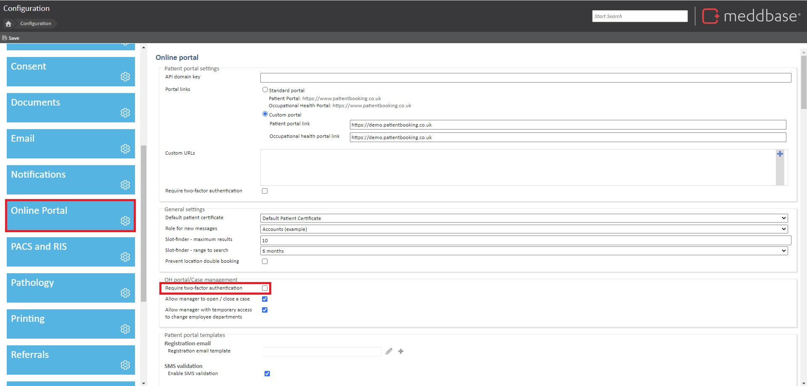
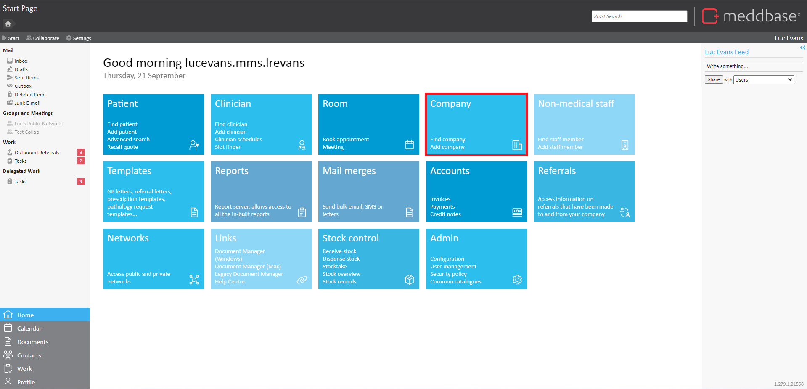
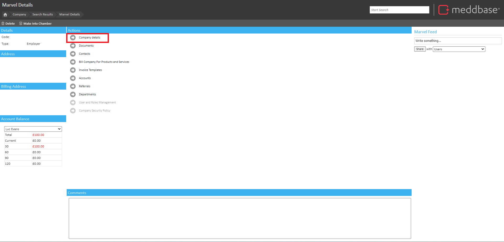
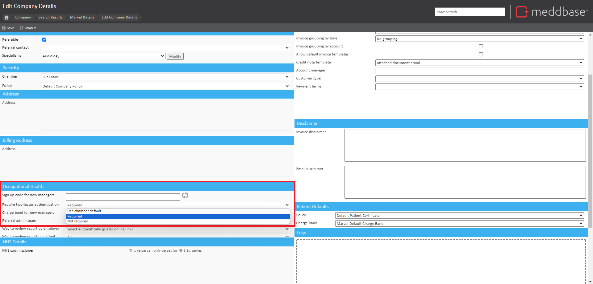
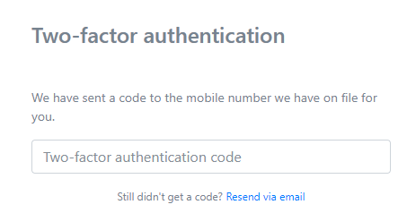
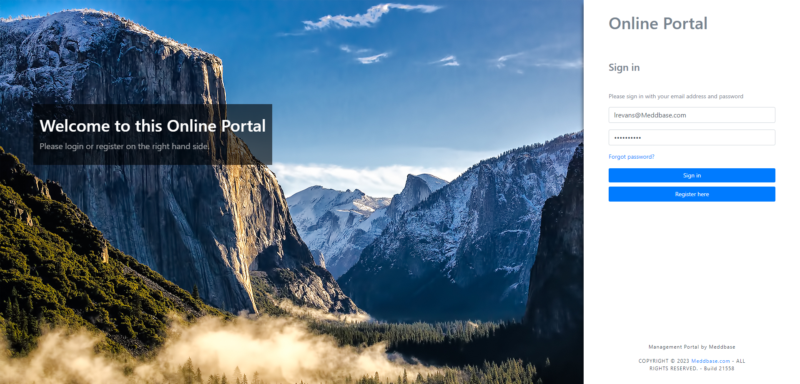
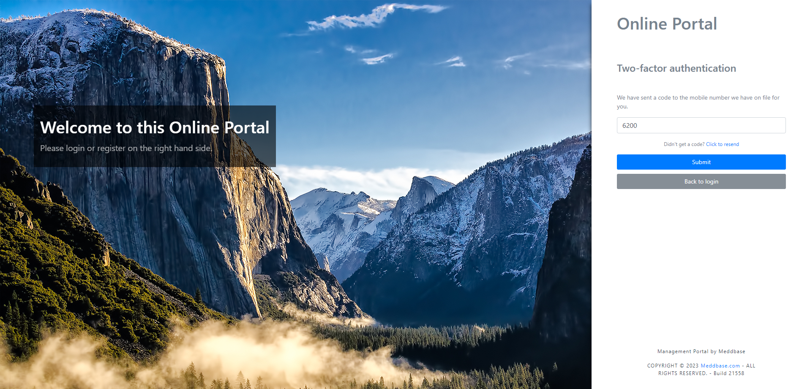

Two Factor Authentication adds an extra layer of security by requiring users to provide two forms of verification, enhancing protection against unauthorised access.
This guide is tailored to walk you through the process of implementing and using Two Factor Authentication (2FA) on the OH referral portal.
Learn how to activate 2FA in Meddbase configuration and follow the steps for how to use 2FA to access the referral portal.
OH Portal 2FA in Meddbase offers flexible security options. You can set it as default for all companies, requiring 2FA for all companies within the chamber, unless explicitly overwritten in the company details page; or 2FA can be disabled by default for all companies and specific employers can be opted in to the feature.
1. Navigate to 'Configuration' under the 'Admin' Panel.

2. On the left, scroll down to 'Online Portal' and tick the box 'Require two-factor authentication' under 'OH portal/Case management'.

1. Locate the company that you wish to assign 2FA, under the 'Company' panel.

2. Open Company Details.

3. Change the drop down menu entitled 'Require two-factor authentication' from '--Default--' to 'Required'.
This must be under the 'Occupational Health' menu.

2FA is sent to the manager's mobile number by default, however, if there is no mobile number associated with the account or the mobile number is out of reach, (after 3 mins) there is an option to resend the 2FA to the manager's work email, using the 'resend via email' button below the authentication field.

Once Enabled, managers will be prompted to provide 2FA when logging in to the referral portal
The managers workflow is as follows:
1. Open the referral portal.
2. Log in with existing employee details.

3. The 2FA will be sent to the managers mobile device via SMS text as a 4-digit code.
If the manager does not have a mobile number associated with the account, the 2FA code will be sent to their work email account
